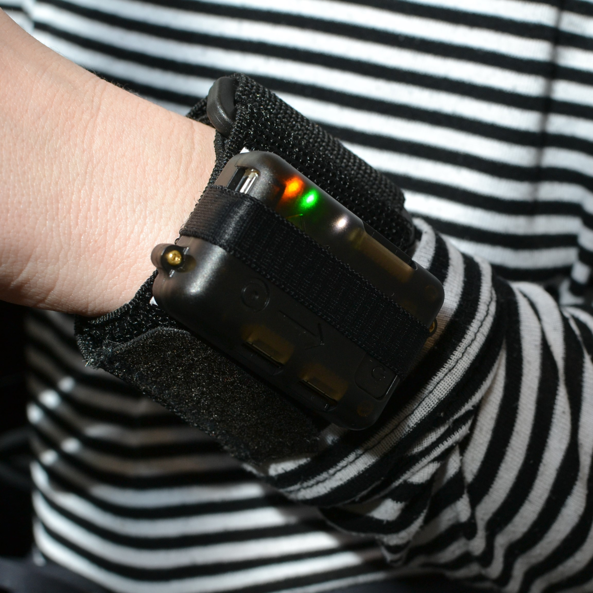
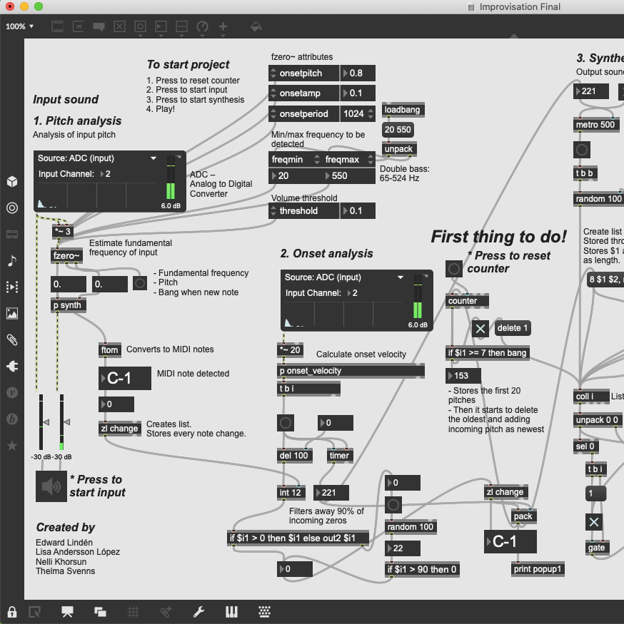

Interactive Dance

Christmas Hero

Improvisational algortihm
Interactive Dance
Christmas Hero
Improvisational algortihm
Chord detector

Quizify

Konsolofon

Dark Exploration

The Cat Theremin

MixAR

Remark
This applications was designed in the course Media Technology and Interaction Design at KTH. It is a note taking application where students can easily make and share notes with each other. The aim of the course was to have a focus on UX and design and its theme was to develope something for social including.
This website
Compositions